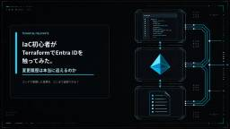
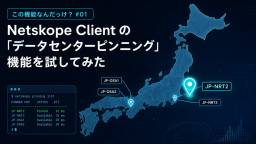
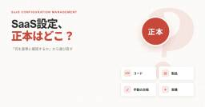
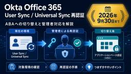

CloudNative BLOGs
https://blog.cloudnative.co.jp
株式会社クラウドネイティブの技術ブログ。ゼロトラスト、SaaS、AI、セキュリティなどの最新情報をお届けします。
フィード
AIエージェントのセキュリティは何から手を付けるか｜英NCSC中間ガイダンスの読み方
CloudNative BLOGs
英NCSCが2026年8月に公開したエージェント型AIの中間ガイダンスを、情シス・セキュリティ担当者向けに解説します。自律度に応じた統制、サンドボックスの成熟度4段階、エージェント専用ID、監査ログ、緊急停止まで、自社の運用を点検する手順に落とし込みます。
1日前

IaC初心者がTerraformでEntra IDを触ってみた。変更履歴は本当に追えるのか 1
1
CloudNative BLOGs
TerraformでEntra IDのセキュリティグループを作成し、手順書運用と比較します。無断変更の検知・是正、監査ログとGitの役割や限界を整理したい方に役立ちます。
4日前
クラウドネイティブに入社しました。
CloudNative BLOGs
2026年9月にクラウドネイティブへ入社したセキュリティチームのkazunoriが、Web開発7年のキャリアからセキュリティ領域を志した理由、入社の経緯、社内AIや分報など入社して感じた環境を紹介します。
4日前

Netskope Client の「データセンターピンニング」機能を試してみた
CloudNative BLOGs
Netskope Client の Data Center Pinning を実機検証。nsdiag --pin による POP 固定手順、Pinned 表示でも既存トンネルが切り替わらない挙動、最大 24 時間・フェイルオーバー不可などの制約を整理します。IP 許可リスト用途には不向きですが、障害時の一時退避や切り分けには活用できそうです。
5日前

SaaS設定はどこを正本にする？管理方式の選び方
2
CloudNative BLOGs
SaaSの設定台帳を更新し続けるには、設定値と判断の理由をどう残すかを考える必要があります。コード管理・専用製品・手動の台帳・観測型を、正本の所在と記録の更新方法で比較し、設定の領域ごとに管理方法を選ぶための条件を整理します。
5日前

Okta の Office 365 プロビジョニング再認証、対象と手順をまとめました
CloudNative BLOGs
Okta の Office 365 アプリで User Sync / Universal Sync を使っている環境は、2026年9月30日までに管理者による再認証が必要です。アプリケーションベース認証（ABA）への切り替えの背景、対象環境の確認方法、再認証の具体的な手順、つまずきやすいポイントまでをまとめました。
5日前

社内Wikiだけではもったいない。Notionエージェントで会社の仕事はどこまで変わる？
CloudNative BLOGs
Notionは、社内Wikiやドキュメントを置くためだけの製品ではなくなっています。ナレッジ、議事録、申請、タスクを同じ場所に集め、AIエージェントに業務を任せるために何を決めておくか、どこから始めるかを解説します。
9日前
今さら聞けないアクセス・権限の略語｜IAM・ACL・RBAC・ABAC・PAMを新人向けに整理【2026】
CloudNative BLOGs
アクセス・権限まわりでよく出るIAM・ACL・RBAC・ABAC・PAMの5語を、最小権限の原則を軸に、意味と登場する場面から整理します。IAMとIdP、RBACとABAC、PAMとPIMの違いも一次情報にもとづいて確認できる、新人向けのリファレンス記事です。
9日前
クラウドネイティブに入社しました！大阪から運用支援チームに参加します
CloudNative BLOGs
2026年9月にクラウドネイティブへ入社した運用支援チームのryuyaが、接客から一人情シスを経たキャリアと入社動機、オンボーディングで実感した整ったIT環境、今後の挑戦を紹介します。
10日前
Keeperのアイコン、ここでは消したいと思ったことありませんか？
CloudNative BLOGs
業務画面の入力欄に出る Keeper のアイコン、「ここでは消したい」と思ったことはありませんか？KeeperFill のサイト別無効化とフィールドアイコン設定を実測し、管理者と利用者それぞれにできること、URL の一致ルールや設定反映の注意点を紹介します。
11日前
「AIが脆弱性見つける時代」のWindows更新運用をトリアージから作り直す
CloudNative BLOGs
Microsoftの月例更新は2026年に206件・570件・421件と急増し、同社はAIによる脆弱性発見で今後も増えると公式に予告しました。CVSS降順のトリアージが破綻する前に、KEVとExploitedフラグで例外を抜き、残りをIntuneの更新リングと迅速化ポリシーで捌く2レーン運用へ再設計する手順を解説します。
12日前
Wiz Atlasの「Mythos超え」から考える、AIに仕事を任せる設計。サイバーエージェントの実践と共通するもの
CloudNative BLOGs
Wiz AtlasがCyberGymでClaude Mythos Previewの公表値を上回った事例と、サイバーエージェントのBUGMAPの実践から、AIに仕事を任せるための分解・役割分担・検証・実行環境の設計を読み解きます。最強モデルを待たずに始めるための経営者やセキュリティ担当者向けです。
12日前
製品選定で「どこから買うか」を大事にしてほしい話
CloudNative BLOGs
製品選定と同様に「どこから買うか」の重要性を解説し、Okta・CrowdStrike・Netskopeを扱うCloudNativeが提供するエンジニア同席や導入後サポートを通じて、IT担当者や経営層が最適なパートナー選びの指針を示します。
12日前
複数案件を管理するためにキャッチアップを仕組み化してみた
CloudNative BLOGs
複数案件を掛け持ちするPMが、情報錯乱を防ぐために案件ごとに状況を1枚に畳み、Claude Codeの自作スキルで各ツール横断要約と差分更新を回す方法を解説します。
16日前
こんな人はクラウドネイティブに向いてる！【フルリモート×フルフレックス】
CloudNative BLOGs
クラウドネイティブは現在採用強化中。フルリモート×スーパーフルフレックスで実際に働くアシスタント兼広報が、「どんな人がクラウドネイティブに向いているのか」を4つの特徴に整理しました。timesチャンネルの文化や自制心が求められる働き方、カジュアル面談の案内まで、入社を検討している方向けの記事です。
19日前
Netskope の Google CASB API が BYOP へ移行。Google / GCP 側で先に準備が必要なことは？
CloudNative BLOGs
Netskope の Google CASB API が、共有プロジェクトから BYOP（Bring Your Own Project）へ移行します。対応の中心は Netskope 側ではなく、Google Cloud と Google 管理コンソールでの事前準備です。GCP プロジェクト、必要な API、サービスアカウント、JSON キー、ドメイン全体の委任まで、2026年9月30日の期限に向けて必要な作業と注意点を整理します。
19日前
改正個人情報保護法に備える | 情シスが今始めるべきこと
CloudNative BLOGs
2026年7月公布の改正個人情報保護法を情シスの視点で整理します。課徴金の対象4類型、委託先義務の明文化と免除特例、特定生体個人情報の規律、漏えい時の本人通知の緩和を押さえ、政令・委員会規則の公表前に着手すべき棚卸しと契約点検の進め方を解説します。
19日前
Slack × Notionカスタムエージェントで、情シスの問い合わせ窓口に一次回答を任せてみた
CloudNative BLOGs
SlackのスタンプまたはメンションでNotionカスタムエージェントを起動し、社内問い合わせの記録と一次回答を任せる仕組みを作りました。設定、指示文の設計、クレジット消費の目安をまとめます。
22日前
組織のAI品質を底上げする方法、無料配布します
CloudNative BLOGs
組織のAI出力品質を底上げする4つのCore Skills（Writing・Evidence・Decision・Agent Safety）を改変可能ライセンスで無料公開します。Glean・Notion・Claude・ChatGPTの4製品へ全社配布する方法と、適用前後の回答比較を解説します。
22日前
Notion Workersの料金はいつから？6月以降の更新まとめとクレジット運用
CloudNative BLOGs
Notion Workersの無料ベータは2026年10月15日に終わり、以降はNotionクレジットが必要になります。1 runあたりの単価とrunの数え方、6月以降に増えたクレジットダッシュボードやDeveloper Portal、課金開始前に見ておく3か所を、公式ヘルプの記述に沿って情シス向けに整理します。
24日前
Auth0とは？独立CIAMとしての特徴・できること・向いているケース【2026】
CloudNative BLOGs
顧客向けID基盤（独立CIAM）の選択肢のひとつ、Auth0を製品選定の担当者向けに紹介します。Universal Loginでの組み込み方、パスキーやMFAの追加、Organizationsでの取引先SSO、Attack Protection、データのリージョンまで、自社要件との相性を判断する観点で整理します。
25日前
フルリモート×フルフレックスで働くアシスタントの“とある1日”
CloudNative BLOGs
フルリモート×フルフレックスで働くアシスタントの一日を、朝のルーティンから会議・議事録・調整まで時系列で紹介し、SlackやAsana等で「安心」を支える工夫を解説します。
1ヶ月前
【10期目】クラウドネイティブってどんな会社？代表のシンジさんに全部聞いてみた！
CloudNative BLOGs
今期で10期目を迎えたクラウドネイティブ。代表のシンジさんに、会社概要から創業までの経緯、事業の特徴、働く環境まで全部聞いてみました。採用強化中につき、気になる方はぜひご一読ください！
1ヶ月前
社内で利用されているMCPサーバーを可視化・統制する
CloudNative BLOGs
社内で使われるMCPサーバーが誰から何へ接続されているか見えない課題に、棚卸しではなく常時可視化で向き合う方法を整理します。PCからのリモートMCP接続はNetskope Agentic Broker、IaaS上のMCPサーバーはWizで把握する役割分担と導入条件を解説します。
1ヶ月前
【Entra ID】優先順位がないなら、どう組むか｜後編・条件付きアクセスを要件レイヤーで重ねる
CloudNative BLOGs
Entra IDの条件付きアクセスを、優先順位ではなく要件レイヤーで重ねる設計として解説。レポート専用モード、認証強度、ブレークグラス、ライセンスなど、インフラ出身者がつまずきやすい6つのポイントを整理します。
1ヶ月前
今さら聞けない認証まわりの略語｜IdP・SSO・MFA・OAuth・OIDC・SAMLを新人向けに整理【2026】
CloudNative BLOGs
認証まわりでよく出るIdP・SSO・MFA・OAuth・OIDC・SAMLの6語を、意味と登場する場面から整理します。IdPとIDaaS、MFAと二段階認証、OAuthとOIDCの違いも一次情報にもとづいて確認できる、新人向けのリファレンス記事です。
1ヶ月前
KMS CMKのデフォルトキーポリシーを変更！セキュアになると思いきや、思わぬ落とし穴が...
CloudNative BLOGs
AWS KMSのCMKでデフォルトキーポリシーのroot文を置き換えるとIAM委任が無効化され、他の許可文や既存グラントがない場合は利用者も管理者も締め出される落とし穴を、事例と仕組みから解説する記事です。
1ヶ月前
手順書にまつわるあるある。これも情シスの仕事ですか？
CloudNative BLOGs
「手順書は作った。共有もした。それなのに、なぜか毎回聞かれる」——情シスで起こりがちな手順書あるある8選。手順書が使われない原因を、置き場所・前提条件・例外対応・オーナー不在の観点から整理し、運用に定着させるための確認ポイントをまとめました。
1ヶ月前
現場のPMに聞く、クラウドネイティブに安心して任せられる理由
CloudNative BLOGs
クラウドネイティブのPMが、受注前からのリスク評価、範囲合意、心理的安全性づくり、進捗の見える化など、安心して任せられる伴走の実態をインタビューで解説します。
1ヶ月前
【検証】Notionの議事録からタスクを自動起票するトリガーを試してみた
CloudNative BLOGs
会議が終わって数分後には、担当者と期限が決まった依頼がタスクになって並んでいる。NotionのAIミーティングノートの要約完了でカスタムエージェントを起動できるトリガーを、実機で検証しました。どこまで任せられるか、案件ごとに絞り込む方法、使う前に決めておく4つを情シス目線で整理しています。
1ヶ月前
先月は来ていた請求書が、今月は来ていない。経理が「無いこと」に気づく4つの習慣
CloudNative BLOGs
先月は届いていた請求書が、今月だけ来ていない。経理の仕事は、こうした「無いこと」に囲まれています。無いことは自分から知らせに来ないため、確認の対象にすら上がりません。見分ける手がかりは過去との比較だけです。AIに任せた処理が「0件」と返してきた経験から、無いことに気づくための4つの習慣に整理しました。
1ヶ月前
8月2日、AIが「名乗る」義務が始まった｜EU AI Act第50条の透明性義務と最終ガイドラインを読み解き、実務に落とし込む
CloudNative BLOGs
2026年8月2日、EU AI Act第50条の透明性義務が適用開始。チャットボットのAI開示、AI生成コンテンツの機械可読マーキング、ディープフェイク表示が義務化されます。欧州委員会の最終ガイドライン（7月20日公表）を踏まえ、日本企業の情シスが行うべき棚卸しと対応手順を整理します。
1ヶ月前
【Netskope】アンインストール保護パスワードに複雑性要件が追加。旧パスワードは「正しくても」拒否されます
CloudNative BLOGs
Netskope R137以降、Client ConfigurationのTAMPERPROOFにあるADMIN PASSWORDに大文字・小文字・数字・記号（@$!%*#?&）の複雑性要件が適用されました。新要件を満たさない既存パスワードは、正しく入力してもアンインストールが拒否されます。サポート確認で判明した要件の全容と対応手順を解説します。
1ヶ月前
クラウドネイティブに入社しました！
CloudNative BLOGs
クラウドネイティブへ入社した運用支援チームの筆者が、自己紹介から前職での経験、入社の決め手、フルリモート環境での感想、今後の目標までを丁寧に振り返る記事です。
1ヶ月前
AIがあればコンサルはいらない、と思っていた
CloudNative BLOGs
生成AIの普及でPMやコンサルが不要になるのかを実体験から検証し、AIに任せる作業と人が担う判断・責任・文脈付与の要点を整理する記事です。
1ヶ月前
「作れば使える」ではない — Google Workspaceのグループメールをメール配送専用に徹させる設定と理由
CloudNative BLOGs
Google Workspaceで代表アドレス用のグループメールを作る際の設計と設定を解説します。外部受信に必要な投稿権限、履歴・Web投稿の無効化、スパム処理やDKIM観点の注意点も整理します。
1ヶ月前
AIエージェント統制は「IDの層」と「コンテンツの層」に分かれた｜BoxとOktaの発表を読み解く
CloudNative BLOGs
BoxとOktaの発表を手がかりに、AIエージェント統制を「ID層」と「コンテンツ層」に分けて整理し、台帳化や認証情報・データ重心の見極めなど実務の着手点を解説する記事です。
1ヶ月前
ついにAIが暴走？誰でも手に入る普通のAIが意図せず企業システムを攻撃して成功
CloudNative BLOGs
豪州でジム予約を任せたAIエージェントがAPI認可不備（BOLA/IDOR）を突き他人の予約を削除した事例を軸に、責任所在や法的論点、経営・監査向けの統制設計を解説します。
1ヶ月前
Netskope R139〜R140の新機能まとめ｜Clientの「無効化しっぱなし」、ようやく自動で戻るようになりました
CloudNative BLOGs
Netskope R139〜R140（2026年夏）のアップデートから、運用者が実際に嬉しい変更だけを選んで整理。Clientの「無効化しっぱなし」を自動復旧するAuto Re-enableのGAを中心に、Claude関連ドメインのカテゴリ再編（Action Required）、Process Nameポリシー、MCP制御の落とし穴など。
1ヶ月前
times批判は根本的に正しい。ではなぜ当社の「times文化」が壊れないのか
CloudNative BLOGs
X上で燃えた「timesにお気持ちを書くな」論争。批判は正しいのにも関わらず、創業時から稼働しているtimes文化が壊れないクラウドネイティブの構造を、Slackアナリティクスの実数とAI日次レポートの運用実態から分析します。
1ヶ月前
【Entra ID】GPO・ACL の知識は、どこまで通じるか｜前編・条件付きアクセスを並べて読み替える
CloudNative BLOGs
Entra ID 条件付きアクセスを GPO・ファイアウォール ACL・Okta のアプリサインインポリシーと比較し、後勝ちや暗黙の deny が通用しない理由と、未想定 OS を塞ぐ設計の勘所を解説します。オンプレからクラウドへ移る情シスの方向けです。
1ヶ月前
情シスの経験は、PMの現場で武器になる
CloudNative BLOGs
情シス経験がPM業務で武器になる理由を、社内調整・会議準備・導入後の定着・スコープ管理・トリアージなど具体例で解説し、転身を考える方のヒントを示します。
1ヶ月前
Exchange OnlineのEWSがいよいよ廃止へ、10月の強制無効化前に8月末までにやっておくこと
CloudNative BLOGs
Exchange OnlineのEWS廃止に備え、2026年10月の強制無効化を回避するための調査方法と設定手順、許可リスト作成の注意点を解説します。
1ヶ月前
英語のデフォルト通知のまま展開しない。NetskopeのUser Alert通知を「チューニングの入力チャネル」にする
CloudNative BLOGs
NetskopeのUser Alert通知をデフォルト英語のまま出さず、日本語テンプレートで理由入力・誤検知報告を組み込み、Skope ITのログから根拠を集めてポリシーチューニングを回す手順を解説します。
1ヶ月前